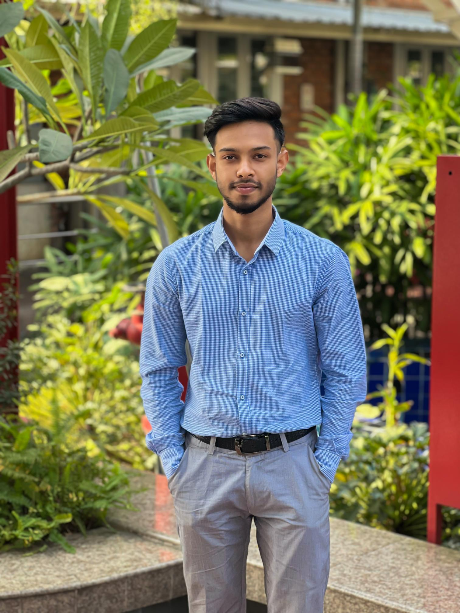

BACHELOR OF SCIENCE · EXPECTED DECEMBER 2026
Computer Science and Engineering
Major in Management Information Systems · MIS
American International University-Bangladesh · AIUB, Kuril, Dhaka
MANAGEMENT INFORMATION SYSTEMS · AIUB
Connecting business questions with thoughtful technology.
I’m an MIS student at American International University-Bangladesh, interested in business and data analysis, information systems, and practical technology.

Curious by nature01 / ABOUT
I’m studying Management Information Systems at AIUB and exploring how people, data, and digital systems work together.
I enjoy looking at a business challenge from more than one angle: understanding the need, making sense of the information, and considering how technology can support a useful solution. I’m building my skills through coursework and projects, with a growing interest in analytics, business intelligence, and information systems.
02 / EDUCATION
From school through university, building a foundation in computer science and information systems.
BACHELOR OF SCIENCE · EXPECTED DECEMBER 2026
Major in Management Information Systems · MIS
American International University-Bangladesh · AIUB, Kuril, Dhaka
HIGHER SECONDARY CERTIFICATE · 2019–2021
Shahid Syed Nazrul Islam College · Town Hall, Mymensingh
SECONDARY SCHOOL CERTIFICATE · 2017–2019
Government Laboratory High School · Batirkal, Mymensingh
03 / SKILLS
A selection of skills from my studies and project work. I’m continuing to learn and grow.
Skills drawn from the supplied CV. Please review and update these to match your current experience.
04 / SELECTED WORK
Academic and team projects listed in my supplied CV. Project links can be added as they become available.
Project details and links are maintained together in js/projects.js.
05 / EXPERIENCE & ACTIVITIES
CIVIO · Team project
Collaborated with a team to design and develop an emergency service platform. Contributed to version control, code reviews, and debugging.
Durgapur–Kolmakanda
Helped distribute food, clean water, and essential supplies to families affected by floods, coordinating with local organizations in high-need areas.
Netrokona
Helped manage traffic flow to support public safety and reduce congestion.
Participated in programming, math, and ICT competitions at AIUB CS Fest and the Intra-AIUB Programming Contest. I also play competitive chess and am a member of ESAB’s AIUB Unit.
06 / CERTIFICATES & ACHIEVEMENTS
Courses and credentials that support my work across technology and information systems.
CISCO NETWORKING ACADEMY · JUN 11, 2023
Certificate of Course Completion · Student-level credential
07 / LANGUAGES
08 / INTERESTS
09 / GET IN TOUCH
Interested in business, data, or technology? I’d be glad to connect and learn about what you’re working on.